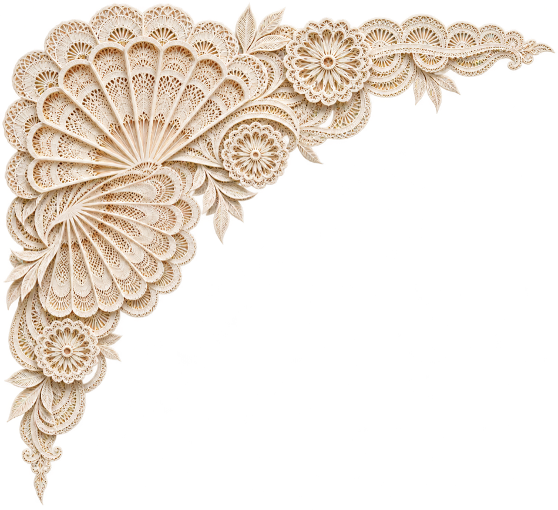
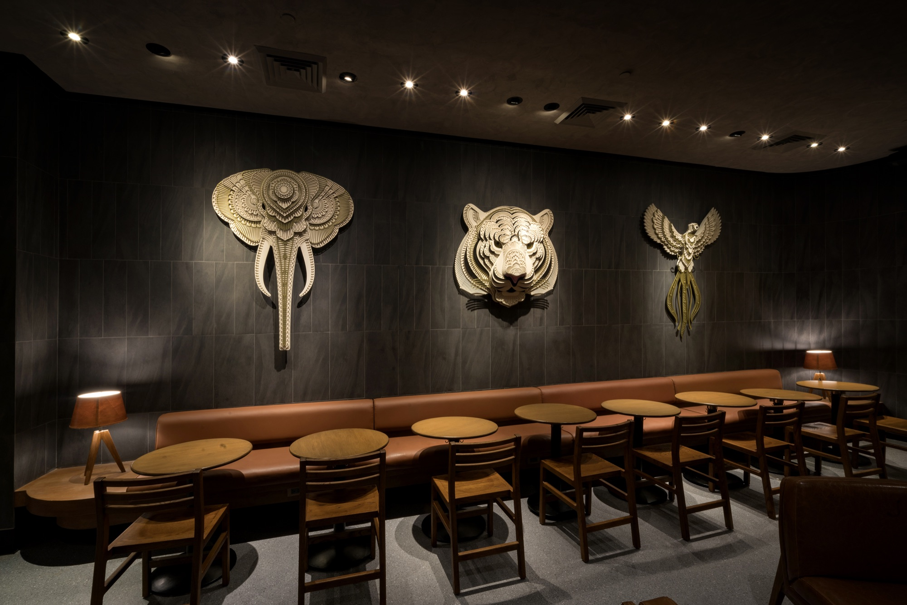
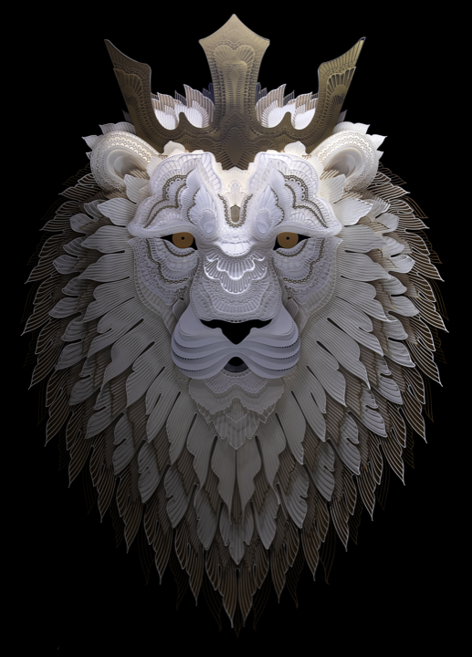

Starbucks Reserve
Sculpture · 11 views

Paper. Pattern. Possibility.
Artist & technologist · Philippines

Featured collaboration · Starbucks
Three coffee-growing regions. Three extraordinary animals.
A sculptural collection for Starbucks Reserve.
An ongoing conversation between nature, cultural memory, and the possibilities of a material.
Sculpture · 11 views

Culture & heritage · 2 views

Culture & heritage · 2 views

Culture & heritage · 1 view

Culture & heritage · 1 view

Sculpture · 1 view

Sculpture · 3 views

Digital explorations · 2 views

The artist
Patrick Cabral is a Filipino multidisciplinary artist whose practice moves between intricate layered sculpture, lettering, and digital experimentation.
His work brings the natural world into conversation with Filipino culture. Delicate patterns become dimensional forms; familiar animals and cultural symbols become an invitation to look closer.
From hand-cut paper to computational studies, each medium offers another way to explore form, rhythm, and possibility.
More about the artist
A closer look
A line becomes a pattern. A pattern becomes a layer. Together, they become something you can almost feel before you touch it.
Explore the detailsCommissions · Collaborations · Inquiries
For artwork inquiries, commissions, exhibitions, or a conversation about an idea, leave a note.
peacabral@gmail.com